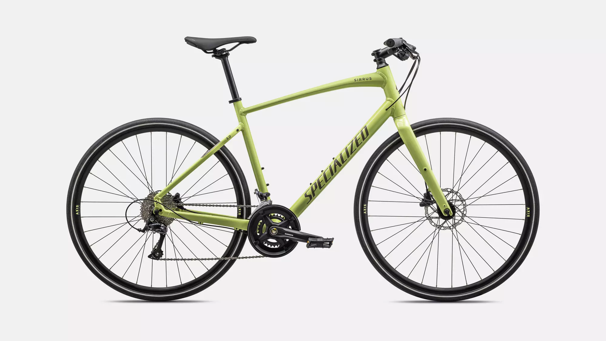
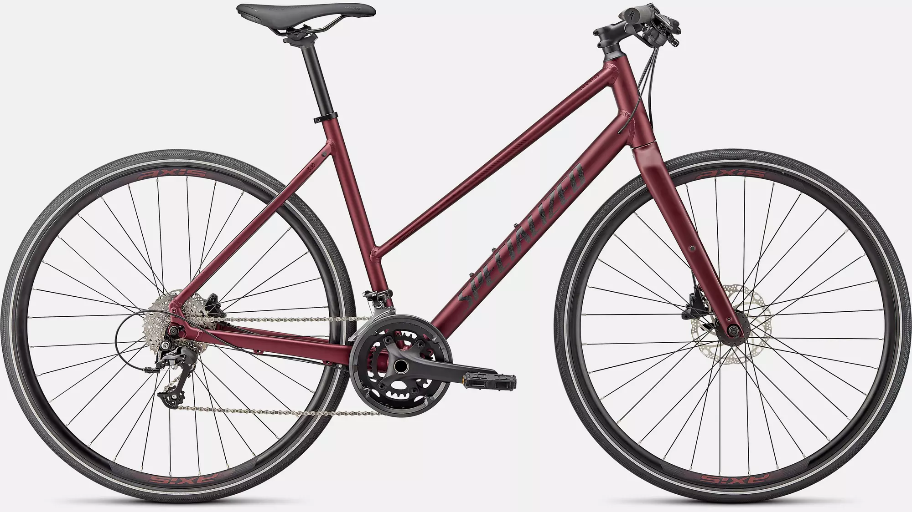

Rowery komfort
Czym są rowery komfort?
Rowery komfortowe, znane również jako rowery rekreacyjne lub cruiser, to typ rowerów zaprojektowanych z myślą o maksymalnej wygodzie podczas jazdy. Ich konstrukcja skupia się na ergonomii, co sprawia, że są idealne do codziennych dojazdów, jazdy po mieście oraz rekreacyjnych wycieczek.

Sirrus 3.0 Step-Through EQ
5 200,00 zł

Sirrus 4.0
6 900,00 zł

Sirrus 3.0
4 300,00 zł

Sirrus 1.0
2 500,00 zł

Sirrus 3.0 Step-Through
3 700,00 zł

Sirrus 2.0 EQ
4 300,00 zł